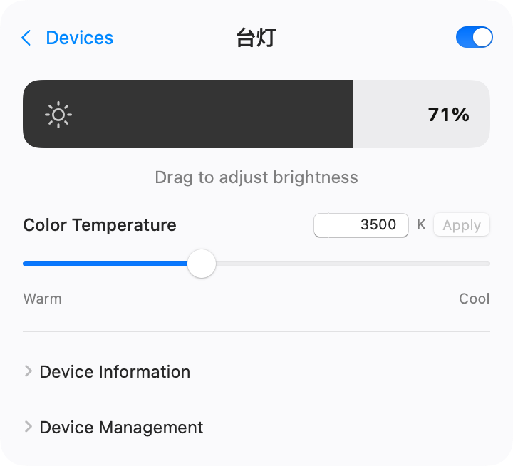
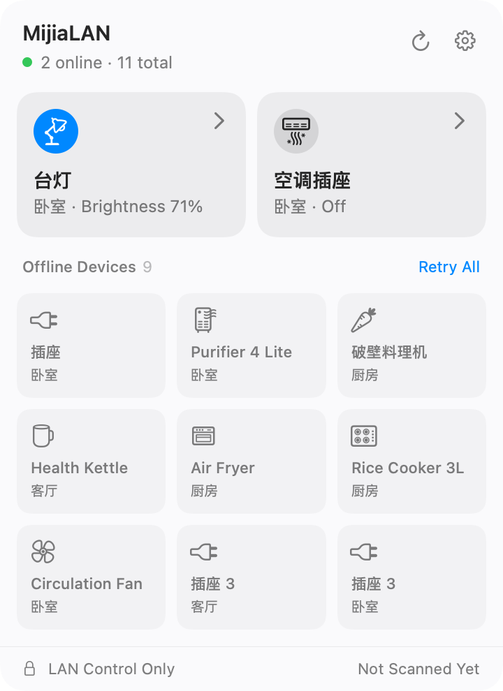

Local control for Xiaomi Home
Bring Mijia devices into Apple Home.
Switch on a lamp or adjust its brightness from your computer. MijiaLAN talks directly to compatible Xiaomi Home Wi-Fi devices on your local network.
macOS, Windows, and Linux Release notes


- Local device control
- Credentials stay in Keychain
- Open source under MIT

01 Menu bar controls
Control lights, temperature, and fans from your Mac.
Open the menu bar panel to check device status. Switch a lamp on or off, adjust the AC temperature, or check your air purifier readings. The available controls depend on your device model.
Check device compatibility02 HomeKit bridge
Turn off a Mijia lamp with Siri.
Choose which devices to bridge on your Mac, then pair them with the Home app on your iPhone. Once paired, you can control them from Apple Watch or include them in Home scenes and automations.
03 Setup
Set up MijiaLAN in three steps.
-
Import your devices
Open MijiaLAN on your Mac and scan the QR code with the Xiaomi Home app. You can also enter an IP address and token manually.
-
Try the menu bar
Connect your Mac and devices to the same local network. Open the menu bar panel and try switching on a lamp or adjusting its brightness.
-
Connect to Apple Home
Enable the bridge and choose your devices. Scan the bridge QR code with the Home app on your iPhone.
04 Download
Download MijiaLAN
The free macOS release comes in a universal installer for Apple Silicon and Intel. The installer uses a Developer ID signature and is notarized by Apple.
All versions and release notesmacOS stable release
v0.2.1 · Universal DMG · macOS 13+
Common questions
Which Xiaomi Home devices are supported?
MijiaLAN supports compatible Mijia Wi-Fi devices reachable on your local network, including selected lights, plugs, fans, air conditioners, and purifiers. See the device compatibility list for models and available controls.
Does everyday use need internet access?
Once your devices are imported and their specifications are cached, you can control them over your local network. QR import through Xiaomi Home and fetching uncached device specifications require internet access.
Will Apple Home work while my Mac is asleep?
Apple Home needs your Mac to stay awake with MijiaLAN running in the background. A home hub such as a HomePod or Apple TV is also needed for remote access or Home automations.